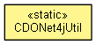

org.eclipse.emf.cdo.net4j
Class CDONet4jUtil
java.lang.Object
 org.eclipse.emf.cdo.net4j.CDONet4jUtil
org.eclipse.emf.cdo.net4j.CDONet4jUtil
- public final class CDONet4jUtil
- extends Object

Various static methods that may help with Net4j-specific CDO sessions.
- Since:
- 2.0
| Methods inherited from class java.lang.Object |
clone, equals, finalize, getClass, hashCode, notify, notifyAll, toString, wait, wait, wait |
PROTOCOL_TCP
public static final String PROTOCOL_TCP
- Since:
- 4.0
- See Also:
- Constant Field Values
PROTOCOL_SSL
public static final String PROTOCOL_SSL
- Since:
- 4.0
- See Also:
- Constant Field Values
PROTOCOL_JVM
public static final String PROTOCOL_JVM
- Since:
- 4.0
- See Also:
- Constant Field Values
createNet4jSessionConfiguration
public static CDONet4jSessionConfiguration createNet4jSessionConfiguration()
- Since:
- 4.1
createSessionConfiguration
@Deprecated
public static CDOSessionConfiguration createSessionConfiguration()
- Deprecated. Use
createNet4jSessionConfiguration().
createReconnectingSessionConfiguration
public static ReconnectingCDOSessionConfiguration createReconnectingSessionConfiguration(String hostAndPort,
String repoName,
IManagedContainer container)
- Since:
- 4.0
createFailoverSessionConfiguration
public static FailoverCDOSessionConfiguration createFailoverSessionConfiguration(String monitorConnectorDescription,
String repositoryGroup)
- Since:
- 4.0
createFailoverSessionConfiguration
public static FailoverCDOSessionConfiguration createFailoverSessionConfiguration(String monitorConnectorDescription,
String repositoryGroup,
IManagedContainer container)
- Since:
- 4.0
prepareContainer
public static void prepareContainer(IManagedContainer container)
getNet4jSession
public static CDONet4jSession getNet4jSession(IManagedContainer container,
String description)
- Since:
- 4.1
getSession
@Deprecated
public static CDOSession getSession(IManagedContainer container,
String description)
- Deprecated. Use
getNet4jSession().
- Since:
- 4.0
Copyright (c) 2011, 2012 Eike Stepper (Berlin, Germany) and others.